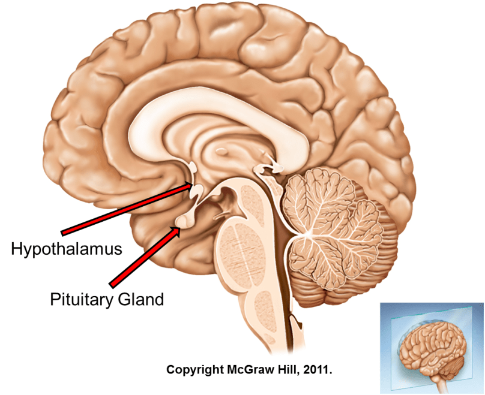

The Production Process of Testosterone
Hypothalamus

Testosterone production begins in the hypothalamus gland located in the brain region. Because certain
stimuli such as sexual arousal, the body will activate the hypothalamus to secrete a substance called
gonadotropin-releasing hormone (GnRH).
Pituitary Gland

After GnRH is released into the bloodstream, the blood vessels carry the hormone to the pituitary gland.
In the pituitary gland, GnRH activates the pituitary gland's ability to produce gonadotropin called
follicle-stimulating hormone and luteinizing hormone and inserts it into the bloodstream.
Testes

Once in the bloodstream, follicle-stimulating hormone and luteinizing hormone travel well to the male
testes, or female ovaries.
In the testes, the hormone activates testicular cells called Leydig cells to synthesize cholesterol as
the basic ingredient of the hormone testosterone.
Testosterone is then released into the bloodstream to perform tasks defined by the hypothalamus.
Ovary

In women, a small amount of testosterone is produced by the ovaries. In this process, follicle-stimulating
hormone and luteinizing hormone activate thecalcal cells of the ovaries.
These cells are also able to synthesize cholesterol from the body into testosterone.
Adrenal Gland

A small amount of testosterone is also produced in the adrenal gland. This can happen both in men and women.
This process is done by activating the cells of the reticular zone of the adrenal gland to synthesize
cholesterol into testosterone.
The impact of excessive Testosterone
Having excessive natural testosterone is not a common problem among men. Most of what is known about
the effects of excessive testosterone levels comes from studies conducted on those who use anabolic or
artificial steroids to increase their testosterone levels.
High testosterone levels can cause some problems in men. These include high blood pressure, high cholesterol,
increased risk of blood clotting, increased risk of heart attack, heart muscle damage, prostate enlargement
and liver disease.
In addition, excessive testosterone can cause low sperm count, shrinking testes and even impotence. In women,
excessive testosterone can cause many problems as well as decrease in breast size and deepening of the sound.
Low Impact of Testosterone
There are a number of problems associated with having too low testosterone levels. In men, problems may include
loss of muscle mass, brittle bones (along with increased risk of fracture), irritability, poor concentration and
depression.
In addition, men with low testosterone levels may suffer from low libido, reduced sperm count, infertility and
impotence. In women, low testosterone can lead to lower bone strength, lower libido and depression.